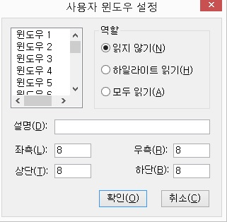
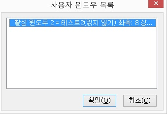

사용자 윈도우의 지정을 위해 현재 읽기 포인터가 위치한 곳을 좌상단으로 지정합니다.
사용자 윈도우 좌상단과 사용자 윈도우 우하단이 동일한 곳에 위치하면 현재 활성된 윈도우의 클라이언트 영역이 사용자 윈도우 범위로 지정됩니다.
사용자 윈도우 지정을 위해 현재 읽기 포인터가 위치한 곳을 사용자 윈도우 우하단으로 지정합니다.
사용자 윈도우 좌상단과 사용자 윈도우 우하단이 동일한 곳에 위치하면 현재 활성된 윈도우의 클라이언트 영역이 사용자 윈도우 범위로 지정이
됩니다.
사용자 윈도우란 윈도우의 특정 영역을 사용자가 직접 윈도우 영역으로 지정하는 것을 의미합니다.
일반적으로 윈도우 내에서 중요한 정보가 표시되는 부분이나 메신저의 대화내용이 표시되는 영역을 사용자 윈도우로 지정해서 사용합니다. 지정된 사용자 윈도우는 역할을 주어 화면 변화를 다양하게 읽을 수 있습니다.
사용자 윈도우 설정 방법
① 읽기 포인터를 사용해 사용자 윈도우로 지정할 영역의 좌상단으로 이동합니다.
② <Alt-Shift-Home>키를 눌러 사용자 윈도우 좌상단 지정을 합니다.
③ 사용자 윈도우로 지정할 영역의 우하단으로 이동합니다.
④ <Alt-Shift-End>키를 눌러 우하단 지정을 합니다.
⑤ <Alt-Shift-Enter>키를 눌러 '사용자 윈도우 설정 대화상자'를 엽니다.

⑥ 비어 있는 윈도우 목록 중 하나를 선택합니다. 윈도우 목록은 1번부터 20번까지 20개가 있으며, 윈도우 번호 다음에 설명과 좌표가 표시되지 않은 목록이 빈 목록입니다.
⑦ '설명' 편집창에 윈도우에 대한 설명을 적습니다. (예: '메신저 본문창', '현재가 정보')
⑧ 역할 선택 라디오 버튼에서 하나의 역할을 선택합니다. 역할에는 읽지 않기, 하일라이트 읽기, 모두 읽기 등 세 가지가 있습니다.(화면 변화
읽기 방법 참고)
⑨ 좌상단과 우하단 지정시 자동 입력된 좌표를 수정할 필요가 있다면 변경합니다.
좌측, 상단, 우측, 하단 편집창에 원하는 값을 입력합니다.
⑩ '확인' 버튼을 눌러 사용자 윈도우 설정을 마칩니다.
지정된 사용자 윈도우 목록을 보여줍니다.
사용자 윈도우의 목록은 윈도우 번호, 윈도우 이름, 역할, 좌표 순으로 표시되며, 목록에서는 변경과 삭제, 활성 윈도우 지정 등의 작업을 처리할 수 있습니다.

사용자 윈도우의 좌상단과 우하단을 지정한 뒤, '좌표 가져오기' 버튼을 눌러 지정된 좌표를 자동으로 가져올 수도 있습니다.
⑤ '역할' 라디오 버튼에서 알맞은 역할을 선택합니다.역할에는 읽지 않기, 하일라이트 읽기, 모두 읽기의 세 가지 옵션이 있습니다.
⑥ '확인' 버튼을 클릭하여 변경된 내용을 적용하고 사용자 윈도우 목록으로 돌아갑니다. * 이미 지정된 사용자 윈도우가 있는 경우 새로운 사용자 윈도우를 등록하면 마지막에 등록된 사용자 윈도우가 활성 사용자 윈도우로
설정됩니다.
사용자 윈도우의 크기를 조절하기 위한 기준을 선택합니다. 기준은 좌측, 상단, 우측, 하단이 있습니다.
이 기능은 이미 지정된 사용자 윈도우의 크기를 변경할 때 사용합니다. 기준을 선택한 다음 기준에 대한 좌표를 증가 및 감소시킴으로써 윈도우 크기를 조절합니다.
활성 사용자 윈도우의 크기를 증가시킵니다.
사용자 윈도우 크기 조절 기준에서 선택한 값에 따라 윈도우의 크기를 확장합니다.
① 기준이 좌측일 때 : X 좌표값이 작아집니다.
② 기준이 상단일 때 : y 좌표값이 작아집니다.
③ 기준이 우측일 때 : x 좌표값이 커집니다.
④ 기준이 하단일 때 : y 좌표값이 커집니다.
사용자 윈도우 크기 조절 기준에서 선택한 값에 따라 사용자 윈도우 크기를 감소시킵니다.
기준에 따라 다음과 같이 좌표값이 변합니다.
① 기준이 좌측일 때 : x 좌표값이 증가합니다.
② 기준이 상단일 때 : y 좌표값이 증가합니다.
③ 기준이 우측일 때 : x 좌표값이 감소합니다.
④ 기준이 하단일 때 : y 좌표값이 감소합니다.
현재 활성화된 사용자 윈도우의 이전 사용자 윈도우로 활성 사용자 윈도우를
변경합니다.
이전 사용자 윈도우란 번호가 작은 사용자 윈도우를 의미합니다. 가장 번호가 작은 사용자 윈도우가 활성 사용자 윈도우일 경우에는 가장 큰 번호의 사용자 윈도우가 활성 윈도우로 변경됩니다.
예: 1, 2, 3, 4번의 사용자 윈도우가 있고, 현재 활성 사용자 윈도우가 3번이라면, '3번 -> 2번 -> 1번 -> 4번 -> 3번 ...'과 같은 순서로 활성 사용자 윈도우가 변경됩니다.
현재 활성화된 사용자 윈도우의 다음 사용자 윈도우로 활성 사용자 윈도우를
변경합니다.
만약, 현재 가장 큰 사용자 윈도우 번호에 있으면 가장 작은 사용자 윈도우 번호로 활성 사용자 윈도우를 변경합니다.
활성 사용자 윈도우를 변경하지 않고 지정된 특정 사용자 윈도우를
읽습니다.
사용자 윈도우 1-10은 <Ctrl-Shift-1~0>키이며, 11-20은 <Alt-Shift-1~0>키입니다.